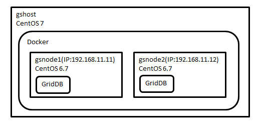

Table of Contents
5.1.3 Preparation: Environment (server)¶
Overview¶
This chapter covers setting up a GridDB server to use while running the sample application.
Components¶
The environment will be configured as follows:
Figure 1 block diagram

Table 2 middleware version
middleware
version
GridDB Community Edition
2.8.0
Docker
1.12.0
Docker Compose
1.8.0
The environment in which you run GridDB will be built in a container using Docker but you can apply the same concepts to other VMs or a native OS to suit your environment. We will install Docker to the host machine’s OS (Centos 7), then manually build a single node GridDB server and then a two node GridDB cluster using docker-compose.
Install Docker¶
Install Docker:
List.1 Docker installation of
$ sudo curl -fsSL https://get.docker.com/ | sh $ sudo usermod -aG docker vagrant $ sudo systemctl enable docker $ sudo systemctl start docker
- L.1: Download and run the Docker installation script.
- L.2: Create a user who runs Docker.
- L.3: Enable boot time start up of Docker.
- L.4: Start Docker.
Create the Docker container¶
These steps create the container where you’ll run GridDB:
List.2 Docker container creation
$ sudo docker pull centos: 6.7 $ sudo docker network create –subnet=192.168.11.0/24 griddb_default $ sudo docker run -it –name gsnode1 -h gsnode1 –net=griddb_default –ip=192.168.11.11 -d centos: 6.7
- L.1: Download the CentOS image.
- L.2: Create a network for the container to run GridDB.
- L.3: Create a container from the CentOS image. This will use the network settings from the previously created network.
Install GriddDB in Docker container.¶
With the Docker container configured , you can install and configure GridDB.
List.3 container login
$ sudo docker exec -it griddb_griddb1_1 bash
Line 1: Run a shell on the GridDB container and log in.
List.4 network settings
# hostname -i 192.168.11.11 # cat /etc/sysconfig/network NETWORKING=yes HOSTNAME=localhost.localdomain # vi /etc/sysconfig/network HOSTNAME= 192.168.11.11 (to change to 192.168.11.11)
- L.1-2: Make sure the IP address has been set for the hostname.
- L.6-7: Set the IP address in the HOSTNAME of/etc/sysconfig/network.
List.5 GridDB installation
# curl -L -O https://github.com/griddb/griddb_nosql/releases/download/v2.8.0/griddb_nosql-2.8.0-1.el6.x86_64.rpm # rpm -Uvh griddb_nosql-2.8.0-1.el6.x86_64.rpm
- L.1: Fetch the GridDB RPM file from Github/
- L.2: Install the RPM.
Then perform the initial configuration of GridDB.
List.6 gs_cluster.json
# cat /var/lib/gridstore/conf/gs_cluster.json (Snip) “Cluster”: { “ClusterName”: “”, (Snip) “LoadbalanceCheckInterval”: “180s” (Snip) # vi /var/lib/gridstore/conf/gs_cluster.json (Snip) “Cluster”: { “ClusterName”: ” GSCLUSTER “, (to set the cluster name clusterName) (Snip) “LoadbalanceCheckInterval”: “180s”, “NotificationMember”: [ { “cluster”: { “address”: “192.168.11.11”, “port”: 10010}, “cync”: { “address”: “192.168.11.11”, “port”: 10020}, “system”: { “address”: “192.168.11.11”, “port”: 10040}, “sransaction”: { “address”: “192.168.11.11”, “port”: 10001}, “sql”: { “address”: “192.168.11.11”, “port”: 20001} } ] (Snip)
- L.4: The initial clusterName will be empty(“”) and GridDB will fail to start.
- L.9: Set clusterName to GSCLUSTER. This setting will be used by applications to connect later.
- L.14-22: Contains address and port information using GridDB’s fixed list format. If you want to configure a cluster of multiple nodes, all nodes information must be listed here.
List.7 Set default user password
# su - gsadm $ gs_passwd admin Password: ** admin ** (enter the password) Retype password: ** admin ** (and then re-enter the password)
- L.1: Internal GridDB commands need to be run as the gsadm user.
- L.2 to 4: Sets the admin user’s password, which is the default user on GridDB.(Note) This admin user is not a user of the OS. The GridDB user name and password will be required for the sample application to connect later.
Now GridDB can be started.
List.8 Start GridDB
# su - gsadm $ gs_startnode -u ** admin/admin ** -w 0 ……. It started node. $ gs_joincluster -c ** GSCLUSTER ** -u ** admin/admin ** -w 0 . Joined node
- L.2: Start the GridDB service. Wait until the start-up in the
-w 0option. You will need to specify the user name and password with the -u flag, such as -u /. - L.5: Either join or create a cluster. Specify the cluster name with the -c option that was set in Listing 6.
Setting of one of GridDB node is now complete.
Dockerfile¶
The Dockerfile contains all the previous work and is able to perform the above configuration steps automatically. It is useful for creating many nodes.
List 9 Dockerfile
FROM centos: 6.7
RUN set -x &&HOST=`hostname` &&sed -i “s/^ \ (HOSTNAME=\). */\ 1 $ HOST /”/etc/sysconfig/network &&curl -L -O https://github.com/griddb/griddb_nosql/releases/download/v2.8.0/griddb_nosql-2.8.0-1.el6.x86_64.rpm &&rpm -Uvh griddb_nosql-2.8.0-1.el6.x86_64.rpm
ARG CLUSTER_CONF RUN echo $CLUSTER_CONF ADD $CLUSTER_CONF /var/lib/gridstore/conf/
RUN set -x &&chown gsadm: gridstore/var/lib/gridstore/conf/$ CLUSTER_CONF &&chmod 640/var/lib/gridstore/conf/$ CLUSTER_CONF &&su - gsadm -c “gs_passwd admin -p admin”
CMD su - gsadm -c “gs_startnode -u admin/admin -w 0 &&gs_joincluster -c GSCLUSTER -n 2 -u admin/admin” &&tail -f/dev/null
It summarizes the settings that were set manually in the above.
- L.9: Allows the gs_cluster.conf input to be specified for use with docker-compose.yml
- L.19: Too build a cluster of multiple nodes, the
gs_joinclustercommand needs the-nthat specifies the number of nodes.
Install Docker Compose¶
If you create more than one similar Docker container, it is worth while to use Docker Compose which can automatically create and boot multiple containers.
List.10 Install Docker Compose
$ curl -L https://github.com/docker/compose/releases/download/1.8.0/docker-compose-`uname -s`-`uname -m` -O $ chmod + x docker-compose-* $ sudo mv docker-compose-* /usr/local/bin/docker-compose
- L.1: Get the Docker Compose for your system binary from Github.
- L.2: Grant executable permissions to the binary.
- L.3: Move the binary to /usr/local/bin, renaming it docker-compose
The following is the contents of Docker Compose’s configuration file, docker-compose.yml:
List.11 Docker Compose configuration file
version: ‘2’ services: griddb1: build: context . args: CLUSTER_CONF: “gs_cluster.json” container_name: gsnode1 networks: default: ipv4_address: 192.168.11.11 ports: - “10001:10001” - “20001:20001” expose: - “10010” - “10020” - “10040” - “10001” - “20001” griddb2: build: context . args: CLUSTER_CONF: “gs_cluster.json” container_name: gsnode2 networks: default: ipv4_address: 192.168.11.12 ports: - “12001:10001” - “22001:20001” expose: - “10010” - “10020” - “10040” - “10001” - “20001”
networks: default: ipam: config: - subnet: 192.168.11.0/24
In the Docker compose file, you have to specify the parameters of the container that had been specified. It also specifies the respective configuration files which need to represent configured values.
The files that will be used in the Docker Compose are placed in a directory as follows:
List.12 Docker Compose configuration file configuration
griddb / - Docker-compose.yml - Dockerfile - gs_cluster_1.json - gs_cluster_2.json
From that directory, run the commands that will create the Container, installer GridDB, and then start the container.
List.13 Docker Compose configuration file placement
$ cd griddb $ sudo /usr/local/bin/docker-compose up -d $ sudo /usr/local/bin/docker-compose ps Name Command State Ports -------------------------------------------------- -------------------------------------------------- -------------------------------------- gsnode1/bin/sh -c su - gsadm -c “… Up 127.0.0.1:10001->10001/tcp, 10010/tcp, 10020/tcp, 10040/tcp, 127.0.0.1:20001->20001/tcp gsnode2/bin/sh -c su - gsadm -c “… Up 0.0.0.0:12001->10001/tcp, 10010/tcp, 10020/tcp, 10040/tcp, 0.0.0.0:22001->20001/tcp
- L.1: Change directory to where the above configuration files were created.
- L.2: In accordance with the docker-compose command in the configuration file, if Docker container has not yet been created then create and start a container. If the container has already been created, it will only be started.
- L.3 to 7: it displays the status of the container that was started in the docker-compose.
Files¶
The set of files used in this chapter can be downloaded from: griddb-server-conf.zip